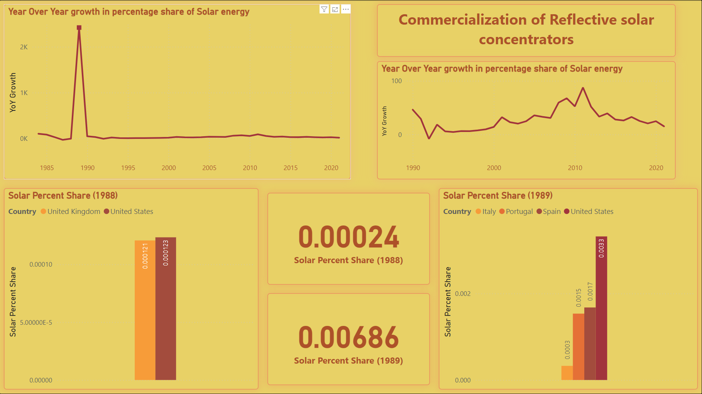

In this analysis I will be primarily focusing on exploring the trends of SOLAR, HYDRO, and WIND energy globally. We will also create a future trend projection and compare it with the latest data available. The analysis will be solely restricted and biased by the source of the data.
We will also be finding the correlation between the countries with high percent share and see how the presence of good renewable energy production has helped these countries to grow their economy.
General Analysis

The above report provides a subtle general idea about the share of different types of renewable energy sources over the period. It also provides a map that shows the highest contrivutors geographically. There exists a slicer which helps to navigate the report to filter and show visuals reported to single or multiple countries.
As can be seen from the graph, there exits a huge contribution towards their whole energy share by the scandinavian nations Norway, Sweden, and Denmark
The area chart shows the growth of the percentage share of renewable energy share globally. We can see that there has been as steep rise in the percent share starting from the year early 2000s. This shows the interest and seriousness taken by different nations to reduce our carbon footprint as well as to preserve the current resources for the greater good and for the future generations.

The image shows the top countries and the lowest countries with average percent renewable energy share over time. It also displays the major energy source and the top contributors by continents by making use of pie chart visuals.
As can be seen from the above visual, ther exists a huge gap between every other renewable energy sources and hydri energy as they have take up more than 75% share of all the resources combined. This can be justified by the huge abundance of water and the invention of hydro energy generators by late 19th century.
We can also see the presence of around 50% average share of countries coming from south American nations. This can be attributed to the prescence of really good solar reception as well as less amount of nations, which helps in increasing the total average as a whole.
Major Facts

There exists a total of 574.45 TWh solar capapcity installed as of 2019. The countries with the top generation of solar energy includes China, Germany, India, Japan, and United Stares.
The report containers a slicer which helps to select the desired country and the year gap to adjust the visual for further analysis.

The image on the left represents major numbers related to the solar energy consumption, generation, and it's average share.
The bar chart shows the yearly average share of solar energy. The table on the right shows the countries with maximum solar generation, as well as countries with the highest capapcity of solar energy resources installed till the year, 2020.

The use of photovoltaic cells as a commercial product was carried out in the year 1989, which resulted in a huge outburst in the generation and usage of solar energy from there on. There exists a percentage increase of more than 2000% in the year 1989.
Due to this act, the solar energy usage has been increasing year over year by great margins from there on.
As of 2020 there exists 78 active countries contributing towards the solar generation worldwide. Every continent contributes a towards this number.

78
active countries
There exits lots of potential for the solar energy industry to grow in the coming years. With high abundance of solar radiation and with correct economic strategies, more countries will be able to implement more solar power plants on a larger scale.
The current progress suggests a forecast of around 4% of world's total energy to be produced using solar resources.
Hydro Energy, with its roots tracing back to ancient civilizations using water wheels, has evolved into one of the most profound and abundant sources for generating renewable energy.
The modern era of hydroelectricity began in 1882, with the establishment of the world's first hydroelectric power plant on the Fox River in 📍Appleton, Wisconsin.
Significant advancements followed in the 1930s, marked by large-scale projects like the construction of the Hoover Dam in the United States, which showcased the potential of hydro energy on an industrial scale.
The introduction of pumped-storage technology in the 1960s further revolutionized the field, enabling efficient energy storage and load balancing.
Over time, countries worldwide have harnessed hydro energy as a sustainable and reliable power source, contributing significantly to the global renewable energy mix.

The report visualises how the year over year percentage growth of hydro energy has changed over period. There exists numberous ups and downs for this source of energy.
This can be accredited to the dependency of rainfall, the availability of sources, and the never ending climate changes endured by different nations.
We can also find that, even though there is an increase in the overall percentage of hydro energy share throughout the period, there has been times when the share was much more that what it is today. This could be due to the innovation of new technologies and other sources of energy during the years, which resulted in a decrease in the overall share of hydro energy.

From the above visual, we can see that there exists a huge gap between the average share of hydro energy of South America as compared to that of other continents. This could arise due to the fact that the population and the number of south american countries is lower when compared to other continents, resulting in an increased percentage share. Such a trend has been found in the global renewable energy share as well.
Australia, even though a continent has been omitted from this list, as it does not have a significant contribution towards the renewable sources of energy.
As of now, there exists, 70 countries who are active in generating Hydro Energy. This number is less compared to the number of countries active in solar energy. This could be due to varying climate conditions, rainfall, and other economic factors.
70
active countries
The final report created using the hydro energy related data is to create forecast graph to determine the growth of it's percent share, generation, and the electricity consumed using them.
We can see a steady increase in the generation and the electricty line charts, whereas for the percent share, there exists not too much growth. Rather, the percent share graph follows a steady line indicating that there won't be much increase in the share, due to new resources being developed and cultivated using modern technologies.

Wind Energy, harnessed since ancient times for sailing ships and grinding grain, has become a cornerstone of modern renewable energy systems. The use of windmills for mechanical power dates back to 7th-century Persia, but the transition to electricity generation began in the late 19th century. In 1887, James Blyth built the first wind turbine to generate electricity in Scotland, followed by Charles Brush in the United States in 1888, who designed a larger-scale wind generator.
The 1980s marked a turning point with the rise of commercial wind farms, particularly in Denmark, solidifying its leadership in wind energy innovation. Recent advancements, such as offshore wind farms and high-efficiency turbine designs, have made wind energy a vital contributor to reducing global carbon emissions and transitioning to sustainable power systems.
The image to the right shows the first wind turbine ever created by it's author James Blyth in 1887.


From the start of wind energy Commercialization till date, this energy source has seen tremendous growth in increasing their share. As of 2021, 1860 TWh of wind energy is generated globally, which accumulates towards 2.95% of total global renewable energy share.
The installed wind capacity accumulates to a total of 825 TWh unit energy, which is a huge number and a growing number, which can help us to grow susutainably.
There exists a massive increase of more than 100k percentile growth in yearly progress from the year 1988 to 1989.
This increase can be accounted to the changes in the technology by removing and installing new and efficient turbines across major countries as well as inby introducing new wind energy fields across the globe.

As of the year 2020, the global wind energy has a total generation of 1.86k TWh, and a capapcity of 824.87 TWh, which is almost 170 times than the first year.